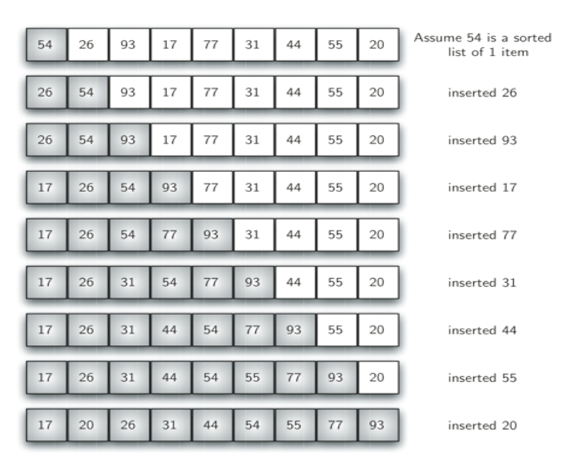
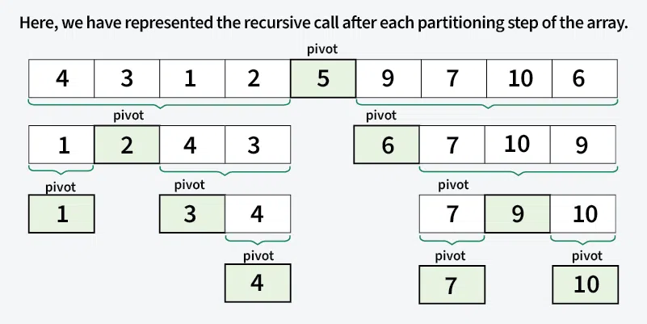

Insertion Sort
Insertion sort adalah algoritma pengurutan sederhana yang bekerja dengan cara memasukkan setiap elemen dari daftar yang belum diurutkan secara iteratif ke posisi yang benar dalam bagian daftar yang sudah diurutkan. Ini seperti mengurutkan kartu remi di tangan Anda. Anda membagi kartu menjadi dua kelompok: kartu yang sudah diurutkan dan kartu yang belum diurutkan. Kemudian, Anda mengambil kartu dari kelompok yang belum diurutkan dan meletakkannya di tempat yang tepat dalam kelompok yang sudah diurutkan.

- Mulailah dengan elemen kedua karena elemen pertama diasumsikan sudah terurut.
- Bandingkan elemen kedua dengan elemen pertama; jika elemen kedua lebih kecil, tukar posisinya.
- Insertion Sort Algorithm - GeeksforGeeks.html
- Ulangi hingga seluruh array terurut.
Contoh Code
lst = [1,6,3,9,2,4]
for i in range(1,len(lst)):
nilaiawal = lst[i]
temp = i
while (lst[temp-1] > nilaiawal and temp > 0):
->lst[temp] = lst[temp-1]
->temp -= 1
lst[temp] = nilaiawal
print(lst)
Quick Sort
QuickSort adalah algoritma pengurutan berdasarkan prinsip Bagi dan Taklukkan yang memilih sebuah elemen sebagai pivot dan mempartisi array yang diberikan di sekitar pivot yang dipilih dengan menempatkan pivot pada posisi yang benar dalam array yang telah diurutkan.

Pada dasarnya ada tiga langkah dalam algoritma tersebut:
- Pilih Pivot: Pilih salah satu elemen dari array sebagai pivot. Pilihan pivot dapat bervariasi (misalnya, elemen pertama, elemen terakhir, elemen acak, atau median).
- Mempartisi Larik: Susun ulang larik di sekitar pivot. Setelah dipartisi, semua elemen yang lebih kecil dari pivot akan berada di sebelah kirinya, dan semua elemen yang lebih besar dari pivot akan berada di sebelah kanannya.
- Panggilan Rekursif: Terapkan proses yang sama secara rekursif pada dua sub-array yang telah dipartisi.
- Kasus Dasar: Rekursi berhenti ketika hanya tersisa satu elemen dalam sub-array, karena satu elemen sudah terurut.
Contoh Code
def Partition(A,start,end):
pivot = A[end]
pIndex = start
for i in range(start,end):
->if (A[i] <= pivot):
-->[i],A[pIndex]=A[pIndex],A[i]
-->pIndex=pIndex+1
A[pIndex],A[end]=A[end],A[pIndex]
return pIndex